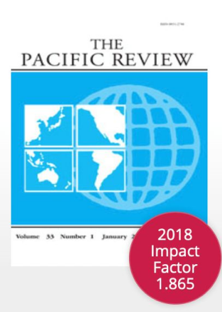

收录于合集

作品简介
【作者】 Catherine Jones，圣安德鲁斯大学国际关系学院讲师，主要研究兴趣为东亚国家对全球制度的参与及其规范性权力。
【编译】 李源（国政学人编译员，吉林大学公共外交学院）
【审核】 张曼娜
【校对 】 刘瑛琛
【排版】 高佳美
【来源】
Jones, C. (2015). GreatPowers, ASEAN, and Security: Reason for Optimism?. The Pacific Review, 28 (2),259-280.
期刊介绍

The Pacific Review，《太平洋评论》是太平洋地区研究的主要平台，作为跨学科期刊，其宗旨和目标为打破研究领域之间以及学术界、新闻界、政府和商界之间的壁垒，重点关注政策问题。根据Journal Citation Reports显示，2018年该刊的影响因子为1.865，在区域研究类SSCI期刊中排名9/47，在国际关系类SSCI期刊中排名第22/91。
大国、东盟与安全：乐观的原因？
Great powers, ASEAN, and security: reason foroptimism?
Catherine Jones
内容提要
外部大国在创造与维持地区安全中发挥的积极作用长期以来处于被忽视的状态，多数研究通常认为外部介入会损害国家集团作为一个共同体发挥作用的能力。然而，本文认为，对东盟而言，外部行为体的存在使得东盟能够作为一个共同体发挥提供与确保安全的作用。在管理与大国的关系时，东盟实际上拥有三种可供东盟和成员国使用的工具：他者化(othering)、限制化(limiting)与层级化(shelving)。这些工具同时增强了东盟的集体认同，并确保东盟和成员国能够通过指导大国的地区参与保证持续安全。
文章导读
一、 既有文献回顾 ****
本文主要涉及三类文献：大国与地区的关系、霸权国与地区的特殊联系、以及东盟作为一个安全共同体的目标及其评价。关注大国与地区关系的多数文献认为当大国参与进某一地区集团时，其会通过自身的单边和多边关系或条约巧妙地破坏该集团的统一(Nagi 2012)。因此，大国参与对地区安全来说并非好事。然而，根据本杰明·米勒(Benjamin Miller)和科里纳·卡根( Korina Kagan )对大国与地区冲突的分析，学者们迫切需要探索大国参与的程度与性质，以及小国操纵这种（大国）参与的自主性程度。尽管一些学者关注了特定大国（中国）与东盟的关系，但这些研究仍然是基于大国的视角，而非探索了东盟的作用。因此，东盟在管理（与大国的）双向动态关系中的作用仍有待探索。第二类文献关注霸权国与地区的关系，其研究重点在于地区组织对霸权国实现其目标的效用。安德鲁·赫雷尔(Andre Heurrell)认为，地区作为霸权国的工具，其作用可以追溯到帝国时代，地区的重要性随着地区（或全球）霸权国的意愿与需要而变化(Hurrell 2007:129)。地区通常被理解为霸权国的工具，或者被理解为其内部因素。根据以上两类有关大国的文献，很明显我们有必要理解大国与地区组织之间的动态互动。最后一类有关安全共同体的文献直接说明了认同、共同体与安全的关系，为本文讨论大国与东盟提供了坚实的基础。卡尔·多伊奇(Karl Deutsch)提出了安全共同体的最初定义，其他学者则进一步发展出了一个灵活的分析框架(Deutsch et al.1969: 5; Adler and Barnett 1998; Bially Mattern 2001: 349-50)。第一，它使得所有成员免受内部或外部威胁所引发的冲突；第二，它应当在地区层面促进国家间与国家内部的冲突预防（其中一个要素便是信任的建立）；第三，它寻求在成员内部形成共同体精神，创造共同认同，使其被外界视为一个具有“我们感(a sense of we- ness)”单一实体。共同认同这一概念被视为建立信任、避免冲突、形成冲突预防机制与免于威胁的合理预期的关键，也是安全共同体与安全机制的关键区别。因此，多数研究都试图理解为何国家会选择彼此信任(Peou 2009)。大国所造成的问题在于其打乱了共同认同的形成，因此破坏了各国选择彼此信任的理由。既有文献忽视了共同体认同的建构过程，尤其是大国在认同建构中发挥的作用。 总之，既有文献具有三点不足：第一，关注大国与地区的文献并未重视认同与共同体构建的作用；第二，倾向于关注一个大国对地区的影响，而忽视了大国间互动如何影响共同体的建构 (Goh 2007: 118) 。第三，倾向于关注大国，而未考虑到联合国等国际机构的作用。 因此，本文探讨了在培育共同体认同的过程中外部大国作为一个核心要素发挥的作用，反过来，共同体认同对于解决大国的地区存在所造成的安全挑战也可能至关重要。为此，本文探讨了三个重要且相互关联的问题： 第一，外部大国是否会阻碍地区或次地区组织提供安全？ 第二，外部大国是否会阻碍地区认同的形成，进而阻碍安全共同体的建构？
第三，在外部行为体存在的情况下，共同体认同如何建构？
二、 “共同体”与东南亚安全 ****
本文基于演绎推理提出了一个框架，展示了外部大国在建构地区共同体认同中的作用。 2.1 外部行为体与共同体形成：一个框架 **
**在东盟中，有这样一个有趣的问题：各行为体之间的内部凝聚力很弱，但有关“共同体”的言辞与尝试却越来越多。这表明除了国家之间对彼此的内部拉力之外，还存在一种外部推力在影响共同体的形成。尽管外部行为体并非是共同体构建的唯一驱动因素，但考虑到其对地区的参与和明确其作用的必要性，有必要探讨外部行为体在推动共同体形成中的作用。
本节阐述了外部行为体可能有助于共同体形成的三种不同方式：他者化 (othering) 、限制化 (limiting)
与层级化 (shelving) 。 **
** 作为“他者”对立面的认同 **
**尽管许多文献承认“他者”的重要性，但绝大多数有关东盟作为一个共同体的文献都是关注特定社会群体之间的共同价值观、认同、目标与“我们感”的构建
(Emmerson 2005;Ochs 1993; Cerulo
1997)。关于这一过程中外部行为体的作用的讨论存在缺失。作者认为这不足为奇，因为西方世界存在着共同的价值观、认同与目标，也有着“我们感”，而“想象的共同体”或“安全共同体”便起源于此。由最初的共同认同发展而来的共同体源于持续的互动和溢出效应，因而共同体得以在成员之间进行内部构建(Haas
1968: 14;Garofano 2002: 504; Schmitter
2005)。对于有关认同建构的文献，其重点也在于共同体成员之间的稳定认同源于内部互动(Cerulo 1997:386-7)。
然而，在亚洲，这种内部动力并不明显。 关注东盟成员国内部差异的文献越来越多。
本文将共同体构建的动力视为对外部力量存在的回应。在某种情况下，学者们不应假定内部凝聚力是预先存在的，而应去寻找能够有效增强其内部凝聚力的现有机制。
因此，与其关注成员国之间的差异程度在决定其共同认同发展的潜力上的重要性，不如关注哪些机制有助于克服这些差异。
机制之一便是东盟和外部或其他大国之间的差异。认同能够作为对外部行为体的回应而形成。
由于东盟国家明显不同于美国（或其他大国），通过让两者（在地区）并存，东盟内部的共同点会更加明显。在东盟认同形成的过程中，除了展现内部的相似性，成员国可能会表现出共同的恐惧和各国团结在一起的“需要”。
此外，东盟积极同外部大国进行接触，但它是通过发展对话伙伴而非吸收新的正式成员实现这一点。
因此，这拉近了东盟与作为自身认同对立面的“他者”的距离，让东盟国家更容易看到彼此间共同的价值观、思想与偏好。作为巩固认同的工具，这种“他者化”过程至少在短期内，使得日益增强的外部关系对东盟的内部团结至关重要。
限制化 **
**在共同体构建中，限制成员可能采取的行为、行动抑或持有的立场十分重要 (Ochs 1993:
289)。共同体需要限制。为了构建共同认同，有必要对谁应该做什么以及共同体应该采取什么行动制定标准。这些限制既有纵向，也有横向，前者是指限制组成共同体的人群（本节进行讨论），后者是指限制共同体的应对及其采取的行动（下一节进行讨论）。在纵向限制方面，共同体存在于有着共同的目标和议程、抑或需要履行有关职能的行为体群体之中。
具有“团结”意识的社会认同水平与特定群体履行的职能有关。 因此，某些共同体需要整个社会作出一定程度的承诺。
但不同类型的共同体要求不同程度的“我们感”，并在不同程度上延伸至社会。外部环境的性质以及与外部大国的关系可能决定着国家“团结”意识的延伸深度。
就欧洲而言，它必须具有共同的身份认同，并将其延伸至社会的各个阶层。但就东盟而言，由于美国在东亚地区特殊的轴辐体系，这并非必要。美国参与的轴辐模式意味着降低了东盟成员国面临的风险与物质成本，提供安全的成本已从（共同体内的）纵向供给转变为东盟整体与外部行为体之间。
层级化 **
**上一节讨论了纵向限制，本节主要关注横向限制。维诺德 ·阿格瓦尔(Vinod
Aggarwal)指出，在一个日益复杂的国际制度框架下，新制度有必要避免与现有制度的重叠。此外，（国际或地区）机构也要求其所发挥的作用被其他机构视为合法(Hurrell
2007:132; Ochs1993)。因此，
在横向限制方面，地区组织必须在涉及现有实践与机构时确定他们所认为的适当行为，同时这些行为必须得到内部和外部的承认。
这将确定东盟应履行哪些安全职能才能被视为一个共同体，并确定因为与其他行为体的关系，东盟共同体受到损害或增强的程度。除了这些社会功能，这种横向限制的“层级化”工具还有另一个基于认同的功能。在确保和寻求维持共同体意识时，东盟国家会利用其议题“层级化”的能力(Leifer
2005)。 这种“层级化”使东盟能够将可能会威胁其内部团结意识的问题外部化 (Ayson
2009:211)，也可以使争端得到最恰当的处理，从而为和平解决提供最佳契机。例如，在提供安全公共产品上，可以利用外部行为体来处理那些可能会暴露内部不团结的议题。
与其利用共同体内部的资源（这要求对可能引发内部分裂的行动进行讨论），利用外部行为体与外部资源不仅可以减轻共同体的资源负担（纵向限制：确保团结意识不会延伸至精英层次之外，后文对此进行了分析），而且还会推动有关采取什么行动、如何行动以及有谁进行行动的内部争论。
这与大国参与的程度和性质以及地区机构塑造这种参与的能力有着内在的联系。因此，东盟会利用其他实体来应对一些议题，同时防止集团内部的分裂与分歧从而维持自身的独特认同。可以看出，
东盟会利用与外部行为体的接触作为学习和发展内部凝聚力的手段。 例如，在冷战后期，东盟对越南施加了协调一致的压力来迫使其撤出柬埔寨(Severino
2008:18-9)。然而，这一行动之所以成功，其部分原因在于东盟与中国立场一致，也在于中国通过安理会施加的压力(Acharya 2005:121-5;
Storey 2011: 28-37)。 ****2.2 东盟、外部大国与共同体形成 **
**本部分探讨了东盟如何利用其与外部行为体的独特关系，既增强自身内部的“共同体”意识，又作为自身工具促进安全的提供。
层级化 **
**作为一个共同体，东盟能够在许多议题上共同代表和提出其行动。例如，在东帝汶问题上，东盟坚持不干涉原则，坚持维和行动必须征得同意。在与外部维和力量对话时，为了寻求援助和扮演一个单一实体的角色，东盟内部的共同身份与统一行动加强了东盟在维持地区安全上的作用。在
1999年的东帝汶问题、20世纪90年代的柬埔寨问题以及由国际刑事法院裁决的马来西亚与印度尼西亚的岛屿争端中，都可以看到这一点。
东盟作为一个集体对其成员国施加了外交压力，并作为一个集体协助了国际组织和外部行为体的维和行动。
东盟议题“层级化”能力的最重要方面在于发展其对话伙伴的作用和功能。普什帕纳坦(Pushpanathan)指出，针对对话伙伴，东盟扮演的角色与采取的方针已发生了转变，例如从获得援助转变为支持发展更加平等的关系(Pushpanathan2003:
para 4)。在此过程中，
东盟认识到其可以通过学习和利用由外部行为体提供的资源，提供安全，整合并形成共同体的内部凝聚力。这表明外部大国可以通过运用资源与经验、提供“层级化”的机会，在共同体形成中发挥积极作用。
作为一个集体的东盟更有能力扮演共同体角色，以从对话伙伴关系中获取最大利益。因此，这也意味着为了从对话伙伴关系中获取最大利益，东盟必须培育更强的内部凝聚力，避免可能导致内部分裂的议题。利用外部大国和外部组织应对地区安全问题的能力有利于东盟的共同体认同，而非有害。
精英共同体 **
**有学者批评东盟内任何“新兴的”共同体意识仅仅延伸至成员国的精英阶层，而非渗透至社会的各个层面 (Jakarta Post2005)。事实上，
这种精英阶层的认同并非缺点，而是一种与共同体需求直接相关的优势。
虽然有学者认为，除非“我们感”延伸至各国社会的各个阶层，否则就无法声称真正的共同体已然形成(Collins 2007)。但本节主要关注两个问题：
第一，由于在维和与预防性外交方面，外部行为体扮演着重要的安全角色，因此东盟成员国被要求为“共同体”做的事情是有限的。
在北约或澳大利亚、新西兰与美国的条约中，由于其条约的性质是提供军事支持，一国公民被要求在必要时捍卫另一国公民，因而延伸至整个社会的共同认同至关重要。但与此相反，在实现安全上，东盟对其成员国规定了不同的义务，这些义务并没有超出精英阶层的范围。正是因为东盟有意限制了自身的职能，其既不是一个集体防务组织，也没有自己的维和部队。东盟之所以能够做到这一点，是因为它能够利用与外部大国的关系，在需要的时候履行这些职能。例如，当东盟在该地区需要军事行动或维和部队时，它能够向联合国寻求支持。在东帝汶或柬埔寨，东盟能够利用日益深化的外部关系来确保地区和平与安全，避免冲突与扮演一个共同体角色。同时，为了实现成员国之间的安全，东盟需要在精英阶层培育“我们感”。
第二，软性制度主义意味着作为一个组织，东盟不会在资金和基础设施方面给成员国人民造成沉重负担，意味着运营和维护组织的成本相对较低。
此外，由于一些东盟成员国并非民主国家，其衡量公众舆论的能力要低于西方国家，这使得评估共同体认同程度更加困难。因此，
对东盟而言，通过公民社会培育“我们感”有可能会引发安全问题，而非解决问题。 **
** 他者化 **
**面对外部行为体的存在，东盟成员国之间的多样性不再那么重要。
与外部大国的并存凸显了成员国之间的共性，因而在外部行为体存在的情况下，东盟国家彼此会更加团结。 外部大国在此过程中发挥着双重作用：
第一，外部大国创造了东盟国家彼此间的、相较于外部他者的认同感。
1967年，东盟成立时的团结动力并非源于共同的过去或文化，而是由于共同的恐惧（Storey
2011）。后冷战时期，出于应对中国在东亚地区的崛起以及对美国的平衡，东盟得以持续存在并（部分）扩大。因此，东盟并不是由于内部的集体认同而团结在一起，而是出于外部的压力与要求。此外，通过美国与东盟的重新接触，东盟论坛的重要性与效力实际上得以重新确认。
第二，外部大国为共同体提供了验证。
其他国际实体愿意利用东盟的框架作为其在该地区谈判与行动的基础。尽管一些学者认为这会削弱东盟的重要性，但这也证实了东盟作为一个合法且合适的安全行为体的作用。随着大国对东盟框架的使用，东盟作为地区安全保障者的角色得到进一步鼓励与认可。此外，在东盟集体否定“他者”的过程中，
外部行为体发挥的另一个作用源于其对话伙伴的地位。
面对作为对话伙伴的外部行为体，东盟必须发展出更紧密的共同体认同才能在与其的谈判中获得最大利益。因此，无论是在自由贸易还是地区安全角色上，与外部大国的交往都催生了更紧密的地区认同。
2.3 应对挑战性议题：检验框架 **
**
上述讨论表明，该框架可能具备一定的解释力。本节进一步讨论了南海争端中的一些关键性问题，认为 东盟的价值源于其内部凝聚力，而这种凝聚力依赖于大国。随着大国间权力与实力平衡的转移，其凝聚力可能会特别脆弱。在南海争端中，东盟因在这一问题上缺乏成功而受到损害，其部分原因在于大国阻碍了东盟使用三种工具的能力。 本部分利用相关案例对在南海争端中东盟使用这三种工具的实际情况及其对东盟内部凝聚力的影响进行了分析。
三、结论
本文认为东盟能够从日益增强的大国参与中获益。大国间的竞争（非破坏性竞争）有益于东盟国家在关系决策中增强自主能力。尽管大国试图在东盟框架之外采取行动，但这些替代方案都还未能取得成功。这一观点仍面临一些重大挑战。第一，为了防止分裂，东盟需要在与大国打交道时表现出更强的凝聚性。第二，本文承认，东盟作为一个集团面临着巨大的问题且问题还在不断增多，这些问题不能仅仅以乐观的看法来解决。但本文为理解东盟作出了一定贡献， 阐述了大国的存在如何有益于共同体认同的形成。东盟能够使用“他者化”、“层级化”与“限制化”三种工具，尽管其并不能在所有情况下都有效地使用这三种工具，但通过这些工具，东盟能够在大国存在的情况下捍卫与发展其共同体认同。
_ ** _ ** _ ** _
本文由国政学人独家编译推荐，文章观点不代表本平台观点，转载请联系授权。**__